Share and delete each trigger a confirmation popup to prevent mistakes. OK proceeds; Cancel goes back.
재촬영 없이 같은 컷에서 캐스팅 후보, 모델 인상, 캐릭터 얼굴을 비교하기 위해 사용합니다. 광고 시안, 룩북, 영상 콘티처럼 결과를 빠르게 보여줘야 하는 작업에서 시간을 줄여줍니다.
재촬영 없이 같은 컷에서 캐스팅 후보, 모델 인상, 캐릭터 얼굴을 비교할 때.
기존 이미지의 포즈와 의상은 마음에 들지만 얼굴만 바꿔야 할 때.
초상권이 민감한 레퍼런스를 대체하거나, 한 장면 안에서 다른 배우/모델 버전을 비교할 때.
왼쪽 세로 메뉴에서 얼굴 교체 아이콘을 클릭합니다.
왼쪽 세로 메뉴에서 얼굴 교체 아이콘을 클릭합니다. 해당 메뉴가 Face Swap 기능입니다.
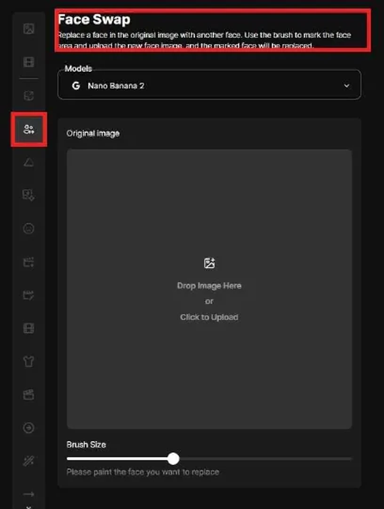
왼쪽에는 설정과 업로드 영역, 오른쪽에는 생성된 결과가 표시됩니다.
왼쪽에는 설정과 업로드 영역이 있고, 오른쪽에는 생성된 결과가 표시됩니다.
처음에는 오른쪽 결과 영역이 비어 있으며, 원본 이미지와 교체 이미지가 준비되면 Generate를 실행합니다.
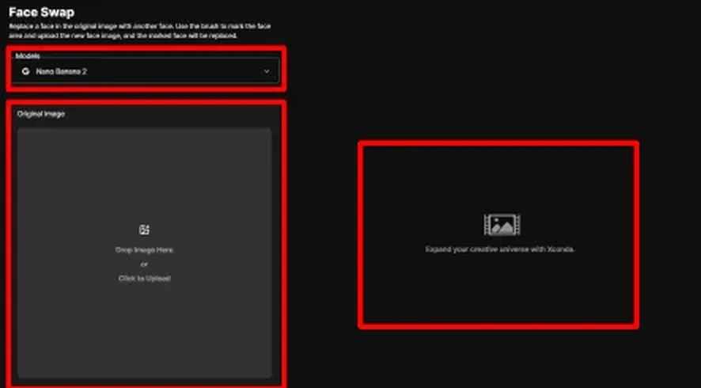
상단 Models에서 사용할 이미지 생성 모델을 선택합니다.
상단 Models에서 사용할 이미지 생성 모델을 선택합니다.
현재 화면에서는 Nano Banana 2와 Nano Banana 옵션을 확인할 수 있습니다.
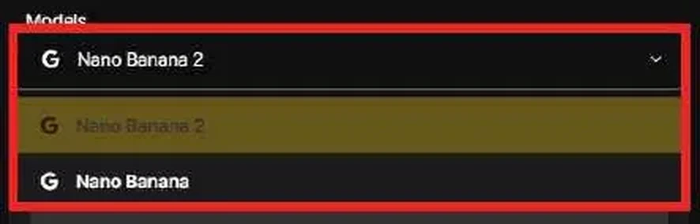
Drop Image Here 또는 Click to Upload로 얼굴을 바꿀 원본 이미지를 업로드합니다.
Drop Image Here 또는 Click to Upload로 얼굴을 바꿀 원본 이미지를 업로드합니다.
얼굴, 머리 방향, 조명, 해상도가 안정적인 사진일수록 결과가 자연스럽습니다.
업로드한 이미지는 우측 상단 X 버튼으로 제거하고 다시 선택할 수 있습니다.
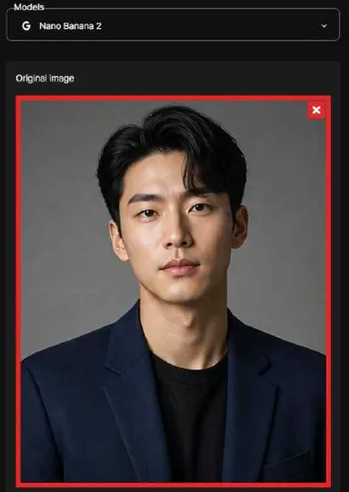
원본 이미지 위에서 브러시로 바꿀 얼굴 영역을 칠합니다.
원본 이미지 위에서 브러시로 바꿀 얼굴 영역을 칠합니다.
칠한 영역이 실제로 교체 대상이 되므로, 얼굴 주변을 너무 좁거나 넓게 잡지 않도록 확인합니다.
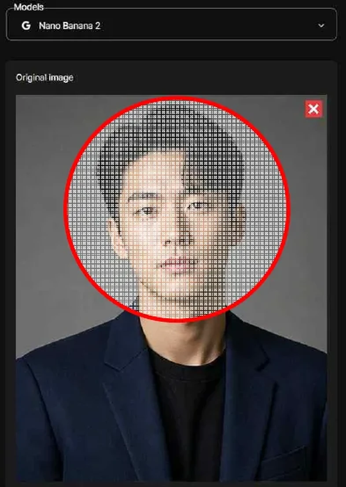
Brush Size 슬라이더로 브러시 크기를 조절합니다.
큰 영역은 굵은 브러시로 빠르게 칠합니다.
눈가나 턱선처럼 섬세한 부분은 작은 브러시로 정리합니다.
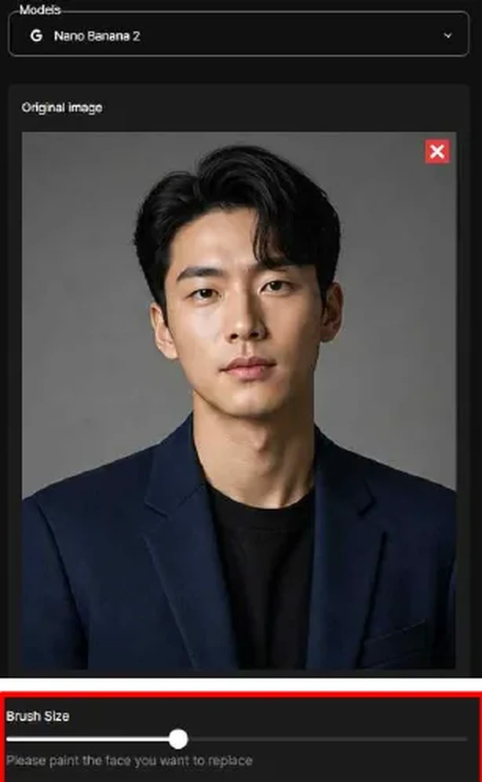
Swap to image 영역에는 새로 적용할 얼굴 이미지를 업로드합니다.
Swap to image 영역에는 새로 적용할 얼굴 이미지를 업로드합니다.
정면 또는 3/4 각도처럼 얼굴 구조가 잘 보이는 이미지를 쓰면 교체 결과가 안정적입니다.
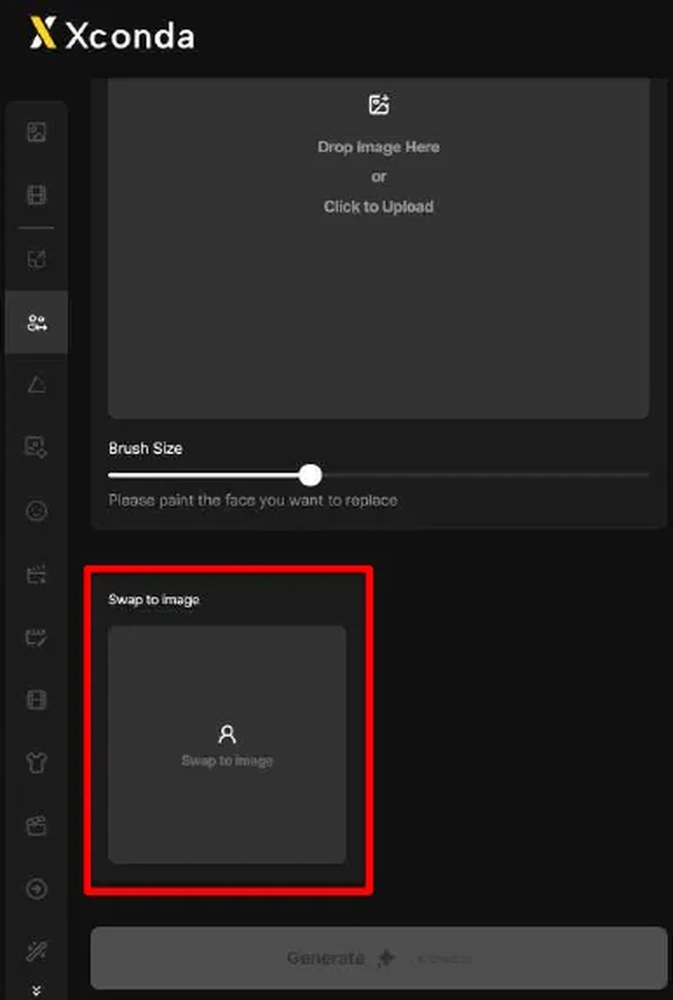
원본 이미지, 브러시 마스크, 교체 얼굴 이미지가 모두 준비되면 Generate 버튼이 활성화됩니다.
원본 이미지, 브러시 마스크, 교체 얼굴 이미지가 모두 준비되면 Generate 버튼이 활성화됩니다.
교체 얼굴 이미지도 우측 상단 X 버튼으로 제거하고 다시 업로드할 수 있습니다.
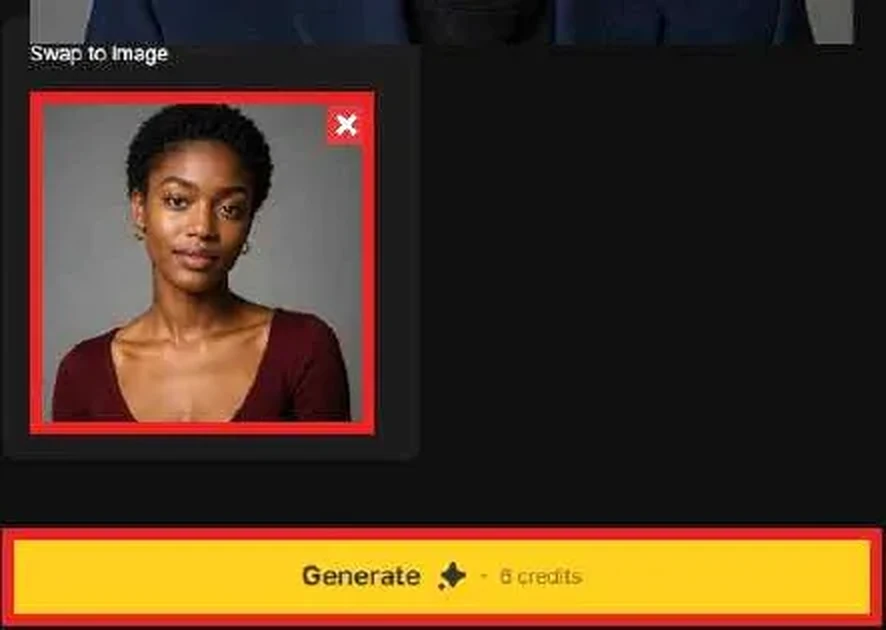
Generate를 누르면 확인 팝업이 표시됩니다.
Generate를 누르면 확인 팝업이 표시됩니다.
OK를 누르면 실제 생성이 시작되고, Cancel을 누르면 이전 화면으로 돌아갑니다.
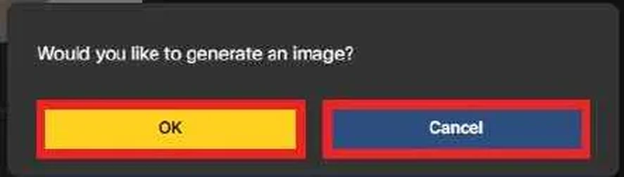
생성이 끝나면 오른쪽 결과 영역에 결과 이미지가 표시됩니다.
생성이 끝나면 오른쪽 결과 영역에 결과 이미지가 표시됩니다.
결과 카드에는 생성 결과, 원본에서 지정한 얼굴 영역, 교체에 사용한 얼굴 이미지가 함께 표시되어 비교하기 쉽습니다.
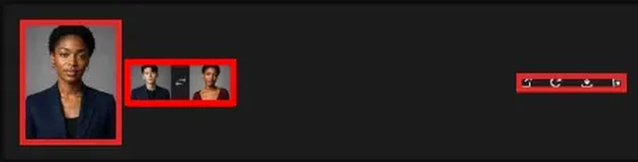
결과 카드 오른쪽의 아이콘으로 결과를 관리합니다.
외부 링크 아이콘은 공개 공유 확인, 새로고침 아이콘은 재생성, 다운로드 아이콘은 파일 저장, 휴지통 아이콘은 삭제 기능입니다.
재생성은 같은 입력값을 바탕으로 새 결과를 다시 만들 때 사용합니다.
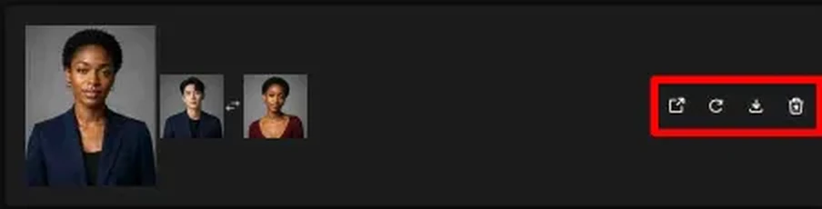
공유와 삭제는 실수 방지를 위해 각각 확인 팝업을 거칩니다.
외부 링크 아이콘을 누르면 미디어를 공개로 공유할지 묻는 팝업이 표시됩니다. OK는 공유를 진행하고, Cancel은 공유하지 않고 닫습니다.
휴지통 아이콘을 누르면 선택한 결과 미디어를 삭제할지 확인합니다. 삭제가 필요한 경우에만 OK를 누르고, 보관해야 하는 결과라면 Cancel을 누릅니다.
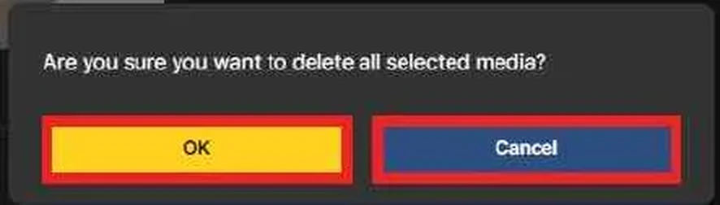